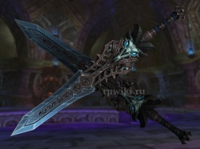
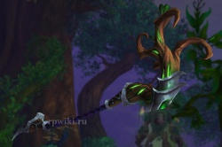
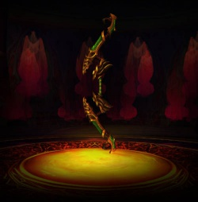
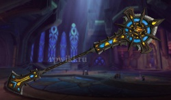
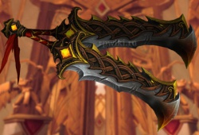

Испепелитель (англ. Ashbringer) – легендарный меч, который является могущественным оружием против нежити. И клинок, и его первый владелец Александрос Могрейн носили одинаковое прозвище. Будущих владельцев, включая Тириона Фордринга, также стали называть Испепелителями...
Клинки падшего принца (англ. Blades of the Fallen Prince) – парные клинки, которые были выкованы из обломков Ледяной Скорби рыцарем смерти, избранным стать дланью возмездия Короля-лича. Клинок для правой руки называется Морозным Жнецом (англ. Frostreaper), а для левой – Вестником Холода (англ. Icebringer)...
Г'ханир, Изначальное Древо (англ. G'Hanir, the Mother Tree) – огромное дерево, выращенное в Изумрудном Сне на вершине высокой горы. Считалось, что его плоды содержали в себе семена всех деревьев Азерота. Г'ханир был источником равновесия и исцеления, что и привлекло к нему внимание Авианы. Она вложила в древо свои силы и связана с ним свою душу, превратив Г'ханир в место, где все крылатые создания обретали посмертную жизнь...
Тас'дора, наследие Ветрокрылых (англ. Thas'dorah, Legacy of the Windrunners) – знаменитый фамильный артефакт, принадлежавший семейству Ветрокрылых из Кель'Таласа. Лук был изготовлен из ветви изначального древа Лесов Вечной Песни вскоре после основания королевства и помещен в Солнечный Колодец, который напитал его силой...
Ярость Света (англ. Light's Wrath) – могущественный посох, который был создан Алым орденом в качестве второго Испепелителя. Участники ордена объединили свои силы на особой церемонии, чтобы сотворить артефакт, но натрезим, проникнувший в ряды ордена, нарушил церемонию. Ужасающий магический взрыв повредил посох, и с тех пор его огромную силу было почти невозможно контролировать...
Боевые мечи валарьяров (англ. Warswords of the Valarjar) – два массивных клинка, лично выкованных хранителем Одином для самого сильного бойца из его армии валарьяров. Мечи были похищены волшебницей Хелией, которая когда-то была убита Одином и превращена в валь'киру...